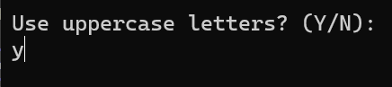
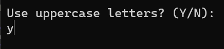

Intro
Here, you will learn how to make a simple password generator using C# and Visual Studio. If you don't know anything about programming, don't worry, we will go over anything step by step.
Here, you will learn how to make a simple password generator using C# and Visual Studio. If you don't know anything about programming, don't worry, we will go over anything step by step.

If u haven't already, download Microsoft Visual Studio from here. After that, open Visual Studio and create a new project select console app and give the project and the solution a name. Finally, when you are ready to create the project, make sure to uncheck the "Do not use top level statements" box After that, we can start on creating our project.
Now that u have created a new project it is time to get started. When u first open the project u will see the main function. In C#, a function is a block of code that performs a specific task or set of tasks and can be invoked (called) from other parts of the program. Functions are essential for code organization, reusability, and modularity.
In a regular C# program the 'Main' function is the entry point of the program. So now we can start by adding the functions we will be using for this project. We are gonna add 3 functions, checkForInputError, throwInputError, GeneratePassword.
The gernerate password function needs 4 arguments 3 of wich are bools (booleans wich can be true or false) and one int (integer that can range from -2,147,483,647 to 2,147,483,647). We have a bool that says wether we want uppercase characters, numbers or symbols and the integer is for determing the password length. The checkForErrorInput function needs 1 argument, a string wich is used to contain text.
 

The first thing we will be adding is a question wether u want uppercase character in your password or not, we will do this using Console.Write("question"); u can also use Console.WriteLine() u can see the diffrence in the images
To register a user input we will be using Console.ReadLine(), what this does is wait for an enter from the user and registers everything a user put in. Than we capture the input in a string (a variable used to store text). After registering the input we will convert the input into a boolean bool useUppercase = input == "y" ? true : false;. What this does is when the input is equal to 'y' it will set the bool to true otherwise it will be false.
We want the user to be able to say if he wants something 'y' or not 'n' but what when the user enters something else? well actually we cant modify the code so that only y counts and all the rest counts as no but for the sake for this project we will show u how to capture wrong inputs. First we make the function checkForInputError the function requires a string to, well... function. The function checks wether the input is 'y' or 'n' if its neither, it will call the throwInputError function. After this we will insert the check between the input and the bool conversion, so when the user enters womething wrong it will get filtered before the app can crash in this instance the app will not crash beceaus we we only check for 'y' input but in other situations it can. But when we encounter a wrong input we will not get an error yet, because we have to implement that function first. The function is pretty straight forward, when we get an error the app asks the user if they want to restart if u input the letter 'r' the console will clear itself using Console.clear() and reload the main function. If the user inputs enything else than r the app will quit.
Now we can write the inputs for every value we need. But for the value of the length we cannot use the checkForInputError function since we expect a number and not a string, so for this we have to create a seperate check but this time we just insert it after the input rather than making a new function. We will do this using int.TryParse() what this does is, if the input is a valid number the code can convert it to an int and the result will be true, otherwise it will be false. If TryParse returns false we can call the throwInputError function to tell us that the input is wrong, otherwise we can parse the string for real and add it to the length.
Now we can get started on writing the GeneratePassword function, first we will add all possible characters the user can choose. We can do this by making 4 strings, one for lowercase characters, uppercase characters, numbers and symbols. Than we check what the user wants, we can do this by making a string chars wich will contain all usable characters. The following code will check every bool, if the bool is true it will add that set of characters to the chars string. At the end we will use a StringBuilder object and a Random. The following code can be a bit complicated for some, what we are doing is we take the StringBuilder object result and we use it's Appdend function what this does is it adds a given char to the StringBuilder because what strings are is basicly a bunch of chars. the chars string contains all of our character that we want. To get a random char out of it we choose a specific character using brackets chars[] now we can insert a index between the brackets to get a specific whar but we want a random so we use the Random.Next() function and the argument we will give it is chars.length this tells the program it needs to choose a random index between 0 and the last index of the string char. Finally we return the result by converting it to a string using the ToString() function.
Now we can just write the password to the screen using Console.WriteLine() and the previously asked arguments.
Congratulations, u may now have made your first program in C#. U know, after hello world ofcource. If u liked it u can try oneof the other projects now, Good luck!